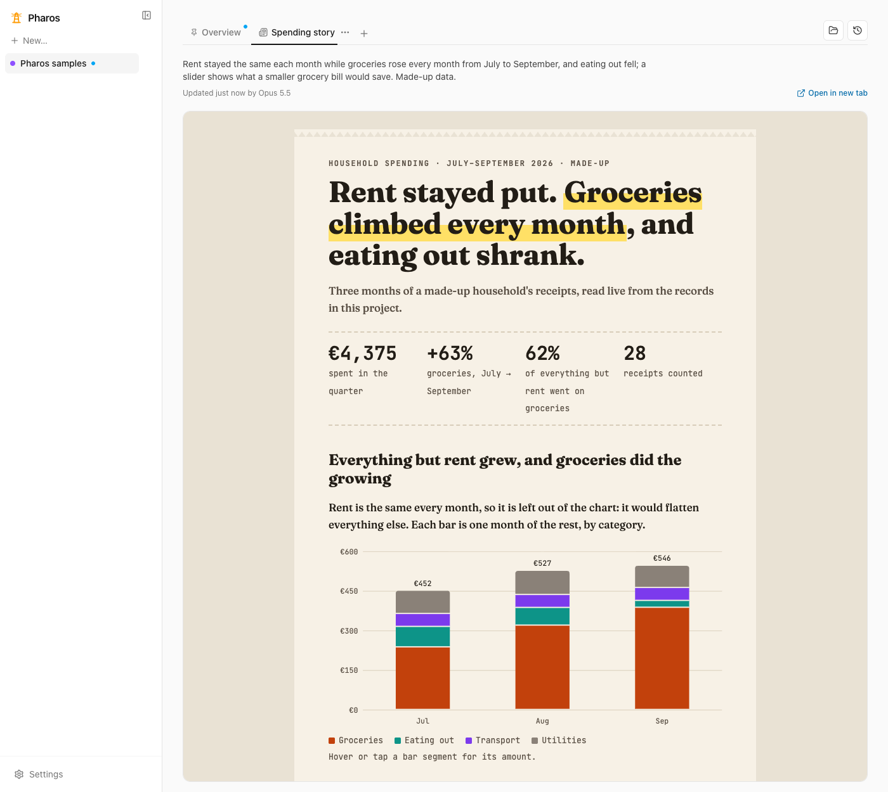

Project management your AI agent can explain.
Pharos keeps a project's goals, scope, stages, tasks, artifacts and decisions as structured data that your agent reads and writes over MCP. Instead of walls of text, the agent explains the project with live views it composes from a catalog of project-management components. Everything runs on your machine.
Long projects drown in prose
Plans, status updates, task lists and explanations from agents all arrive as text. As a project grows, both you and the agent lose track.
- Traditional trackers impose a fixed framework, and not every project fits it.
- Flexible tools like docs and whiteboards are hard for an agent to understand, produce or keep up to date.
Generative UI over real data
The agent builds the interface that best explains this project, but it never draws from scratch.
- Structured data first. Views are built over project data, so changing a task updates every view that shows it.
- Compose, don't draw. Views are typed JSON specs from a component catalog: consistent, safe and editable.
- Ask with a click. Ask a question from any widget and the agent answers with a focused view instead of paragraphs.
How it works
One local server holds the data and speaks MCP to your agent. A local web app renders the views and updates live as the agent works.
⇄
⇄
Connect your agent
Add Pharos as an MCP server. Any MCP client works, over HTTP or stdio.
Let it set up the project
The agent records goals, scope, stages and tasks from your repo or brief, and keeps them current as it works.
Read views, ask questions
Open the web app to see stage trackers, timelines and boards. Ask from any widget; the answer arrives as a new view.
What's in v0.2
Pharos now reads more like a set of pages about your project than a tracker.
Component catalog
Stage trackers, timelines, kanban boards, goal trees, tables, charts, decision blocks, galleries, before-and-after and more, bound to live data.
Report documents and pages
Agents write reports from catalog blocks in Pharos's style, or a whole bespoke HTML page in a locked frame that reads live project data.
Every change is a revision
All writes are recorded with full before and after snapshots. Inspect history and revert anything, whoever made the change.
What changed, and what's stale
Pages show what changed since you last looked, and agent-built views are marked out of date when the data they read changes.
Actions and block asks
Action blocks like "Log a service" or "Mark paid" act on records with one revision and Undo. Ask an agent to change just one block.
Automatic answers
With Claude Code installed, questions asked in the web app are answered automatically. Bring your own command, pause it, or turn it off.
Project files, read-only
Show the files a project is about from folders you choose. Files stay on your disk; agents see details only, never contents.
Records and packs
Record types with money, date and text fields, plus ready-made packs for cars, money, music, study and company documents.

Get started
Requires Node.js 22.13+, 24 (recommended) or 26+, and pnpm 12.9.1 (or
npx pnpm@12.9.1).
git clone https://github.com/zuboto-dev/pharos
cd pharos
pnpm install --frozen-lockfile
pnpm dev
The server runs on localhost:4300 (REST at /api, MCP at
/mcp) and the web app on localhost:5173. On macOS,
pnpm service install keeps it running and up to date in the background.
Connect your agent
# Claude Code
claude mcp add --transport http pharos http://localhost:4300/mcp
# Codex
codex mcp add pharos --url http://localhost:4300/mcp
Cursor and other streamable HTTP clients use the same URL; stdio clients like Claude
Desktop run apps/server/dist/stdio.js. Then try asking:
- “Set up a project in Pharos for this repo from its docs.”
- “What's blocking the current stage? Answer with a Pharos view.”
Tested with real agents
Compatibility scenarios run a real agent CLI against an isolated Pharos server: set up a project, mark a task done, answer with a checked view, start from a pack, ask for a folder, and write a report document.
| Agent | Result | Date |
|---|---|---|
| Claude Code | 6 of 6 passed | 2026-10-20 |
| Codex | 5 of 5 passed | 2026-10-14 |
| OpenCode | Planned | — |
Local-first, no account
Data lives in one SQLite file on your machine. There is no account and no cloud service. v0.2 has no authentication, so keep the server and web app local. See SECURITY.md for the trust model.
Open source
Pharos is MIT licensed and in early development: APIs and saved view formats may change. Read the release notes and contributing guide, or open an issue with feedback.